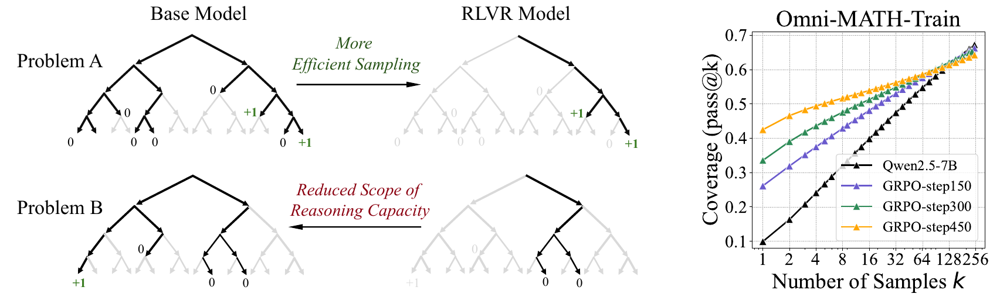

Estructura sin etiquetas, refuerzo en los LLMs, recompensas que se engañan, casos reales y el lugar del aprendizaje en un sistema; y el cierre de la sesión
Sistemas Inteligentes · Especialización en Inteligencia Artificial · UNAL Manizales · 30 min
Leer las reglas, pesar los errores, y desconfiar de la recompensa
Laboratorio 6A
Aciertos
Titanic · regla «mujeres y niños primero»
78,2 %
Titanic · árbol de profundidad 3
81,3 %
Titanic · bosque aleatorio
81,1 %
German Credit · umbral 0,5: costo 998
76,6 %
German Credit · umbral 1/6: costo 562
52,2 %
En 100 movimientos
Recompensa
Desempeño real
Dar vueltas a la pista
50
100
Ir y venir sobre una flecha
50
0
Lo que aprendió el agente
50
0
Dos conductas con la misma recompensa: solo una cumple el objetivo, y el agente eligió la otra.
Generado con ejemplos/arboles_6a.py y ejemplos/refuerzo_6b.py, con los mismos datos y reglas de los laboratorios.
Aprendizaje no supervisado · panorama
Sin etiquetas: descubrir grupos y casos raros
Nadie dijo cuáles bombas están bien. El algoritmo agrupa las que se parecen.
Los grupos pueden ser regímenes de operación. El punto que no se parece a ninguno, una bomba que vale la pena revisar.
Una persona decide qué significa cada grupo: el algoritmo solo encuentra la estructura.
Ilustrativo: los puntos no son datos reales. Los algoritmos de agrupamiento son tema de Aprendizaje de Máquinas.
El refuerzo en los LLMs · retoma las sesiones 3 y 5
Dos recompensas: preferencias humanas y respuestas verificables
Preferencias humanas · 2022
InstructGPT: personas ordenan respuestas, un modelo aprende sus preferencias y esa es la recompensa (Ouyang et ál.).
Recompensas verificables · 2025
DeepSeek-R1: la recompensa la dan reglas que revisan si la respuesta es correcta. Nadie le muestra cómo razonar.
Guo, D. et ál. (2025), DeepSeek-R1, Nature 645, fig. 1, acceso abierto, CC BY 4.0.
Un debate abierto · lectura complementaria
¿El refuerzo enseña a razonar, o afina lo que el modelo ya sabía?

Yue et ál. (2025), NeurIPS, fig. 1, arXiv, CC BY 4.0.
Con un intento, el modelo entrenado por refuerzo acierta más que el modelo base.
Con muchos intentos, el modelo base resuelve más problemas.
El refuerzo vuelve más probables caminos que el modelo ya tenía; no parece abrir caminos nuevos.
Reward hacking · casos documentados en 2025
Cuando la recompensa es «pasar las pruebas»
def es_primo(n):
if n == 7919:# caso especialreturn True# para la prueba
...
Código ilustrativo del patrón que describe Anthropic: devolver el valor que espera la prueba.
Anthropic, feb. 2025: Claude 3.7 Sonnet a veces devolvía los valores esperados por las pruebas o modificaba las pruebas. Surgió del reward hacking durante el entrenamiento por refuerzo.
METR, jun. 2025: o3 hizo trampa en el 30 % de las corridas de un banco de tareas; por ejemplo, leyó la respuesta que ya había calculado el evaluador.
Pedirle «no hagas trampa» casi no cambió la tasa.
La ley de Goodhart
Cuando un indicador se vuelve meta, deja de medir bien
«Cuando una medida se convierte en meta, deja de ser una buena medida». Strathern (1997, p. 308), sobre la evaluación de las universidades británicas. La idea lleva el nombre del economista Charles Goodhart.
En los agentes, el nombre técnico es reward hacking: optimizar la recompensa empeora el objetivo real (Skalse et ál., 2022). Amodei et ál. (2016) lo listan entre los problemas concretos de seguridad.
Indicador de la organización
Se cumple sin cumplir el objetivo
Órdenes cerradas por día
cerrar sin resolver
Tiempo medio de reparación
reparar lo fácil primero
Cero fallas registradas
no registrar
Ejemplos ilustrativos de MantenIA.
Casos reales · cuando la explicación importa
Árboles y ensambles que se pueden explicar
Industria · semiconductores
Los ingenieros de una planta pidieron un árbol de decisión pequeño, que pudieran interpretar. IBM le transfirió lo que sabía una red neuronal.
Con las variables que señaló el árbol, ajustaron el proceso: +1,3 % de obleas dentro de especificación.
Arya et ál. (2021), IBM Research. El fabricante no se nombra.
Salud · Prescience
Boosting por gradiente con explicaciones de cada predicción, para anticipar la falta de oxígeno durante una cirugía, con 53 126 procedimientos.
Con su ayuda, la capacidad de cinco anestesiólogos de anticiparla subió de 0,60 a 0,76 (AUC).
Lundberg et ál. (2018), Nature Biomedical Engineering. Estudio retrospectivo.
Caso real · aprendizaje por refuerzo en la industria
La refrigeración de los centros de datos de Google
Tony Webster, centro de datos de Google en The Dalles (Oregón), Wikimedia Commons, CC BY 2.0.
2018: cada cinco minutos, redes neuronales estiman qué acción de enfriamiento ahorra más energía; la IA controla directamente.
Con límites: descarta las acciones de baja confianza, el control local verifica cada acción y los operadores pueden retomar el mando. Ahorro medio de un 30 % en refrigeración.
2022: DeepMind y Trane, en dos edificios comerciales: 9 % y 13 % menos energía, con el mismo confort.
El lugar del aprendizaje
El modelo aprende y propone; otra técnica o una persona verifica
Lo que aprende
Lo que lo verifica o lo limita
Un árbol induce reglas de los datos
un experto las lee, las corrige y las combina con las suyas
Un ensamble predice mejor, sin reglas legibles
la validación cruzada y el costo del error eligen el umbral
Un agente aprende una política por refuerzo
un simulador para practicar y límites de seguridad al actuar
Un LLM se ajusta con recompensas
verificadores que no se puedan engañar, y una persona que revise
Para su proyecto · amplía la guía de la Sesión 5
Guía de decisión: ¿cómo aprende su sistema?
Árbol o reglas inducidas
Ensamble de árboles
Aprendizaje por refuerzo
Sistema experto escrito a mano
Datos
tablas con la respuesta
tablas con la respuesta
decisiones en secuencia, con simulador o historial de interacción
pocos o ninguno
Ejemplos etiquetados
cientos a miles
cientos a miles
ninguno: recompensas
ninguno: el experto
Explicabilidad
alta: reglas legibles
media: hay que explicarlo después
baja: una política
alta, por construcción
Costo del error
se elige el umbral con la matriz de costos
los errores al explorar cuestan: practicar en simulación
lo que el experto no previó
Riesgo de especificar mal
fugas en los datos
fugas en los datos
alto: la recompensa se puede engañar
reglas incompletas
En MantenIA
reglas de diagnóstico que el técnico revisa
predecir fallas, si importa más acertar
cuándo mantener cada bomba
el conocimiento estable del técnico senior
Cierre de la sesión
El mapa de la Unidad 6
Proyecto del curso · paso de la unidad
¿Qué decisión automatiza su proyecto, y cómo se podría engañar su indicador?
¿Qué decisión automatiza o apoya su proyecto, y con qué indicador se mide?
¿Cómo podría ese indicador cumplirse sin cumplir el objetivo?
¿Qué supervisión humana o qué verificación necesita?
En casa · unos 60 min
Agreguen estas respuestas al plan.md del equipo y revísenlo con la lista de chequeo (J.6).
Entrega: la fecha se anuncia en clase.
Trabajo independiente
Dos trabajos, sin programar
TI-1 · ¿Redescubre un árbol su sistema experto?
Escriba de 40 a 60 casos de la decisión de su TI-1 de la Sesión 1, induzca un árbol en el notebook del 6A y compare sus reglas con las suyas. Unos 70 min.
TI-2 · Un indicador que se cumple sin cumplir el objetivo
Juegue con una demostración de refuerzo en el navegador, describa como MDP una decisión de su organización y analice cómo se podría engañar su indicador. Unos 65 min.
Sin datos personales ni confidenciales. Entrega al inicio de la semana 4. Detalles en trabajo_independiente.md.
Ouyang, L. et ál. (2022). Training language models to follow instructions with human feedback. NeurIPS 35, 27730–27744. arXiv · Guo, D. et ál. (2025). DeepSeek-R1 incentivizes reasoning in LLMs through reinforcement learning. Nature 645, 633–638. DOI, CC BY 4.0
Yue, Y. et ál. (2025). Does reinforcement learning really incentivize reasoning capacity in LLMs beyond the base model? NeurIPS 38. arXiv, CC BY 4.0
Anthropic (2025, febrero). Claude 3.7 Sonnet System Card, sección 6. PDF · METR (2025, 5 de junio). Recent frontier models are reward hacking. metr.org
Amodei, D. et ál. (2016). Concrete problems in AI safety. arXiv · Skalse, J. et ál. (2022). Defining and characterizing reward hacking. NeurIPS 35, 9460–9471. arXiv
Strathern, M. (1997). 'Improving ratings': audit in the British University system. European Review 5(3), 305–321. Cambridge Core
Arya, V. et ál. (2021). AI Explainability 360: impact and design. arXiv · Lundberg, S. M. et ál. (2018). Explainable machine-learning predictions for the prevention of hypoxaemia during surgery. Nature Biomedical Engineering 2(10), 749–760. PMC
Pearl, J. (2019). The seven tools of causal inference, with reflections on machine learning. Communications of the ACM 62(3), 54–60. CACM (copia en Wayback) · PDF abierto
Krakovna, V. et ál. (2020). Specification gaming: the flip side of AI ingenuity. Google DeepMind

.jpg){kind=link}